<!-- .slide: data-state="front hide-controls" --> <div id="title">Lab on Asymmetric Cryptography & Digital Signatures</div> <div id="subtitle">Data Privacy and Security</div> <div id="date">Data Science and Management (DASMA)</div> --- ## From Symmetric to Asymmetric Cryptography <div class="content-center"> <div class="alert alert-error">Symmetric Cryptography suffers from <b>two main limitations</b>:</div> <br/> 1. **Key Distribution**: Alice and Bob must securely exchange a shared secret key in advance. <br> 2. **Key Management**: when we have $n$ users, we need to manage $n(n-1)/2$ keys: - There are billions of users accessing the internet, it cannot scale! - E.g., Whatsapp has over 2B (billion) users, and would need to manage $2B \\times 2B / 2 \\approx 2$ quintillion keys! <br/> <div class="fragment" data-fragment-index="0"> <div class="alert alert-hint">Asymmetric cryptography addresses both issues by leveraging <b>mathematical asymmetry</b>.</div> <br/> Examples of asymmetric cryptographic algorithms include RSA, Diffie-Hellman, ... </div> </div> --- ## How to achieve this *asymmetry*? <div class="content-center"> <br> Most asymmetric cryptographic algorithms exploit a mathematical problem showing this behavior: <div style="padding: 10px;"> <img src="img/problem.drawio.png" style="height: 600px"> </div> <div class="cell-center"> *Easy to compute the result starting from the input parameters but hard to compute the input parameters starting from the result* </div> </div> --- <!-- .slide: data-state="break-blue hide-controls" --> # Diffie-Hellman Algorithm --- ## Shared Key Exchange <div class="content-center"> <div class="alert alert-warning">What if Alice and Bob wanted to use a <b>single shared secret key</b> for communication, without revealing it to an eavesdropper?</div> <br/> <div class="fragment" data-fragment-index="0"> <div class="alert alert-hint">DH allows them to agree on a shared secret by exploiting the <b>Discrete Logarithm Problem (DLP)</b>:</div> <br/> <div class="columns-container columns-center"> <div class="col"> - **Easy to compute** the exponentiation of an integer modulo a prime. - **Hard to reverse** it (through logarithms) to deduce the original exponent, which is needed to compute the shared secret. </div> <div class="col"> <p>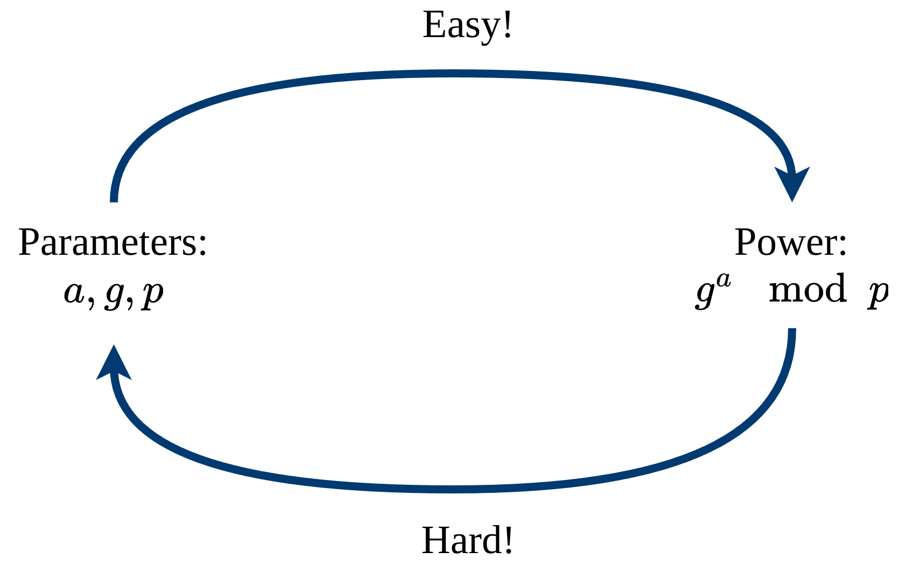</p> </div> </div> </div> </div> --- ## Diffie-Hellman Key Exchange Algorithm (1976) <div class="content-center"> Public parameters: - Prime number p - Generator g <br/> <br/> <div class="columns-container columns-top"> <div class="col"> <div class="fragment" data-fragment-index="1"> <div class="cell-center"> Alice: $a \\in [1, p-1]$ $g^a \\mod p$ <br><br> </div> </div> <div class="fragment" data-fragment-index="3"> <div class="cell-center"> $(g^b)^a \\mod p = g^{ab} \\mod p$ </div> </div> </div> <div class="col"> <div class="fragment" data-fragment-index="2"> <div class="cell-center"> Exchanged messages:<br><br><br> $\\xRightarrow{~~~~~~~~g^a \\mod p~~~~~~~~}$ $\\xLeftarrow[~~~~~~~~g^b \\mod p~~~~~~~~]{}$ </div> </div> </div> <div class="col"> <div class="fragment" data-fragment-index="1"> <div class="cell-center"> Bob: $b \\in [1, p-1]$ $g^b \\mod p$ <br><br> </div> </div> <div class="fragment" data-fragment-index="3"> <div class="cell-center" style="padding-bottom: 10px;"> $(g^a)^b \\mod p = g^{ab} \\mod p$ </div> </div> </div> </div> <div class="fragment" data-fragment-index="3"> <div class="alert alert-hint"><b>NOTICE</b>: In the end, both parties have the same shared secret key $k = g^{ab} \bmod p$.</div> </div> </div> --- ## DH in Python <div class="content-center"> ```python # Public parameters p = 23 # prime number g = 5 # generator # Alice's private key a = 6 # Alice's public key A = pow(g, a, p) # equivalent to (g ** a) % p # Bob's private key b = 15 # Bob's public key B = pow(g, b, p) # equivalent to (g ** b) % p # Shared secret computation: shared_alice = pow(B, a, p) shared_bob = pow(A, b, p) ``` </div> --- ## Is DH secure against a <u>passive</u> attacker? <div class="content-center"> <div class="alert alert-recall"><b>NOTE</b>: A passive attacker can only eavesdrop on the communication.</div> <br/> <div class="fragment" data-fragment-index="0"> Passive attacker: - from eavesdropping knows $g, p, g^a \\bmod p, g^b \\bmod p$ - can compute $g^{a+b} \\bmod p$ which is different from $g^{ab} \\bmod p$ <br/> <br/> </div> <div class="fragment" data-fragment-index="1"> <div class="cell-center"> ***Why it cannot compute the shared secret key?*** </div> <br/> </div> <div class="fragment" data-fragment-index="2"> To build the shared secret key it needs to recover $a$ (or $b$). One way of breaking DH is to solve DLP, which is believed to be hard to break. However, there could be other ways of breaking DH that do not necessarily need to solve DLP. However, after several years it is still believed to be safe. </div> </div> --- ## Is DH secure against an <u>active</u> attacker? <div class="content-center"> <div class="alert alert-recall"><b>NOTE</b>: An active attacker can both eavesdrop and modify the communication.</div> <br/> <div class="fragment" data-fragment-index="0"> ***Man-in-the-Middle (MITM)*** attack: 1. Adversary fakes Bob identity and performs DH with Alice. 2. Adversary fakes Alice identity and performs DH with Bob. 3. Alice and Bob think that they have a common shared key, instead they are sharing a secret key with the adversary. <br/> </div> <div class="fragment" data-fragment-index="1"> <div class="alert alert-error"><b>PROBLEM:</b><br> Alice and Bob do not <b><i>authenticate</b></i> the received public keys => the attacker is able to impersonate both parties.</div> </div> </div> --- <!-- .slide: data-state="break-blue hide-controls" --> # RSA (Rivest–Shamir–Adleman) cryptosystem --- ## Solving the Key Management Problem <div class="content-center"> <div class="alert alert-error">In a network with n users, using symmetric encryption requires <b>one shared key for each pair of users</b>.</div> - Leads to having to manage $n(n-1)/2$ keys. - E.g. 10 users → 45 keys; 100 users → 4,950 keys! <br/> <div class="fragment" data-fragment-index="0"> <div class="alert alert-hint">Asymmetric Cryptography tackles this issue by:</div> - Giving each user a **single key pair**: a public key (shared) and a private key (kept secret). - Eliminating the need to pre-share secret keys between every pair of users. - Allowing anyone to send encrypted messages to a user using their public key, which only the owner can decrypt with its private key. </div> </div> --- ## RSA Scheme <div class="content-center"> **Variables:** - $n = p \\cdot q$ - modulus - $e$ - public exponent - $d$ - private exponent - $m$ - plaintext message - $c$ - ciphertext **Keys:** - Public Key: $(n, e)$ - Private Key: $(n, d)$ **Formulas:** - **Encryption:** $c \\equiv m^e \\pmod{n}$ - **Decryption:** $m \\equiv c^d \\pmod{n}$ </div> --- ## RSA: Is it secure? <div class="content-center"> <div class="alert alert-recall">The main assumption behind RSA is that, given ($e$, $n$), it should be hard to compute $d$, $p$, $q$ or $\Phi(n)$.</div> <br/> To make this hard: - $p$ and $q$ should be two large (more than 1024 bits) distinct prime numbers. - $p$ and $q$ shouldn't be close. - $e$ should be equal or larger than $3$. - ... <br/> <br/> <div class="fragment" data-fragment-index="1"> <div class="alert alert-warning"><b>WARNING</b>: even when recommendations are followed, RSA suffers from different problems.</div> </div> </div> --- ## RSA: what if two moduli share a common factor p? <div class="content-center"> $$ N_1 = p \\cdot q_1\\\\{} N_2 = p \\cdot q_2\\\\{} gcd(N_1, N_2) = p $$ <br/> <br/> Then we can easily recover $q_1$ and $q_2$: $$ q_1 = N_1 / p\\\\{} q_2 = N_2 / p $$ <br/> <div class="alert alert-warning"><b>NOTE</b>: knowing N,p,q we can compute $\phi(N)$ and recover $d$.</div> </div> --- ## RSA: small message, small exponent e <div class="content-center"> If $x$ and $e$ are small then the modulo operation does nothing: $$ y = x^e \\: mod \\, n = x^e $$ Adversary can easily get the plaintext, without factoring $n$ by computing: $$ x = \\sqrt[e]{y} $$ <br/> <div class="fragment" data-fragment-index="1"> Corner case: if $e = -1$ then $$ y \\equiv x^e \\equiv x^{-1} \\pmod{N} $$ The ciphertext is simply the modular inverse of the plaintext. Any adversary that knows $N$ can immediately recover the plaintext by computing: $$ x \\equiv y^{-1} \\pmod{N} $$ </div> </div> --- <!-- .slide: data-state="break-blue hide-controls" --> # Digital Signatures: OpenGPG --- ## Beyond Confidentiality <div class="content-center"> Cryptography is not only about keeping messages secret (confidentiality). It is also used to provide: - **Integrity:** Ensure the message has not been altered. - **Authentication:** Verify the identity of the sender. - **Non-repudiation:** Prevent the sender from denying that they sent the message. <br/> <div class="fragment" data-fragment-index="0"> <div class="alert alert-recall">These goals can be achieved through <b>Digital Signatures</b>.</div> <br/> Digital signatures work in the **public-key cryptography** setting: - The sender **signs** a message using their **private key**. - Anyone can **verify** the signature using the sender's **public key**. </div> </div> --- ## PGP: Pretty Good Privacy <div class="content-center"> **PGP** - Example of **digitals signatures** in practice. - Software created for email and file encryption. - Enables users to communicate securely using public-key cryptography. <br> <div class="fragment" data-fragment-index="0"> **OpenPGP** - Standard derived from PGP that defines format and rules for encrypted messages, digital signatures, and key exchange between systems. - Enables interoperability between different PGP-compatible programs and promotes open encryption standards. </div> </div> --- ## OpenPGP: Signing & Verification <div class="content-center"> <div class="columns-container columns-center"> <div class="col"> <p>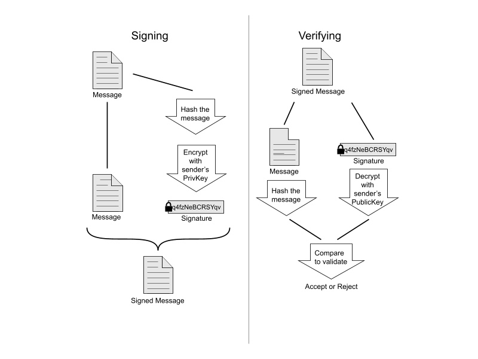</p> </div> <div class="col"> Signing (Sender Side) - The original file is processed through a hash function. - The hash is encrypted with the sender’s private key. - The result is the digital signature, attached to the file. <br> Verification (Receiver Side) - The receiver computes the hash of the received file. - The signature is decrypted using the sender’s public key. - The two hashes are compared. </div> </div> <div class="fragment" data-fragment-index="1"> <div class="alert alert-hint">If they match → the file is authentic and unmodified.</div> </div> <div class="fragment" data-fragment-index="2"> <div class="alert alert-error">If they differ → the file was altered or the signature is invalid.</div> </div> </div> --- ## OpenPGP: Encryption & Decryption <div class="content-center"> <div class="columns-container columns-center"> <div class="col"> <p>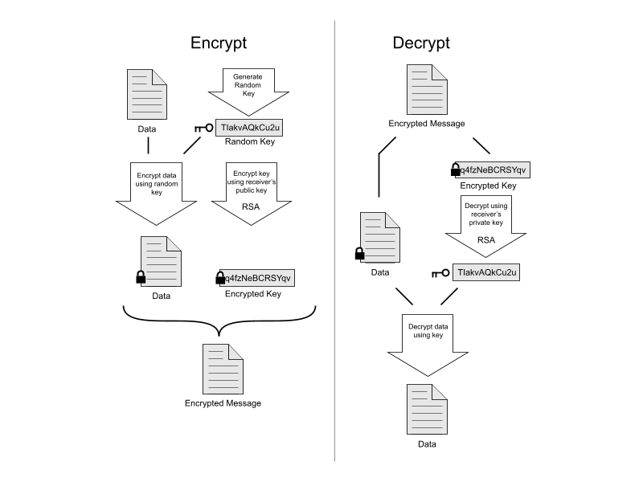</p> </div> <div class="col"> Encryption (Sender Side) - A random symmetric key is generated. - The file is encrypted using the symmetric key. - The symmetric key is encrypted with the receiver’s public key (e.g., RSA). - The encrypted file + encrypted key are sent together. <br> Decryption (Receiver Side) - The encrypted symmetric key is decrypted using the receiver’s private key. - The recovered symmetric key is used to decrypt the file. </div> </div> </div> --- ## OpenPGP in practice <div class="content-center"> **GPG** - Most popular implementation of the OpenPGP standard. <br> Allows users to: - Generate public/private key pairs. - Export and import keys. - Encrypt and decrypt files. - Create and verify digital signatures. - ... </div> --- ## Playing with OpenPGP <div class="content-center"> **Windows** - Tool: https://www.gpg4win.org/ - After a short installation wizard, **Kleopatra** is installed on the system, providing a graphical interface for managing keys, encryption, and signatures. <br> **MacOS** - Tool: https://gpgtools.org/ - After installation, **GPG Suite (GPGTools)** is available on the system, integrating OpenPGP functionality into macOS apps and providing key management tools. </div> --- <!-- .slide: data-state="break-blue hide-controls" --> # gpg4win <div class="content-center"> Windows Tool </div> --- ## gpg4win: interface overview <div class="content-center"> Initial page of the Kleopatra interface: <p>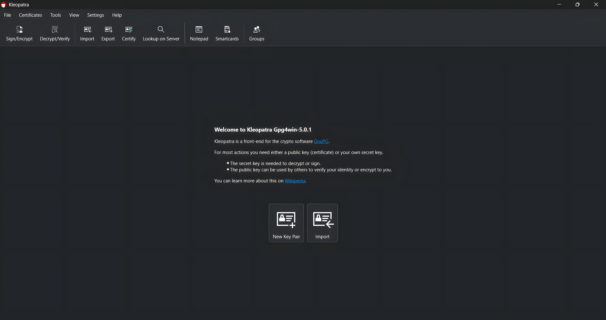</p> </div> --- ## gpg4win: action toolbar <div class="content-center"> Offer quick access to: - Signing. - Encryption. - Verification. - Decryption. - Import and export of keys. - ... <p>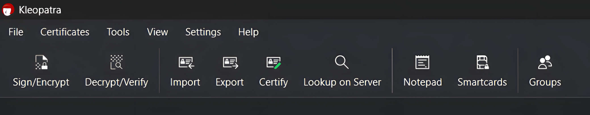</p> </div> --- ## gpg4win: creating a new key pair <div class="content-center"> Click *New Key Pair* → Enter Name & Email → Generate Keys: <p>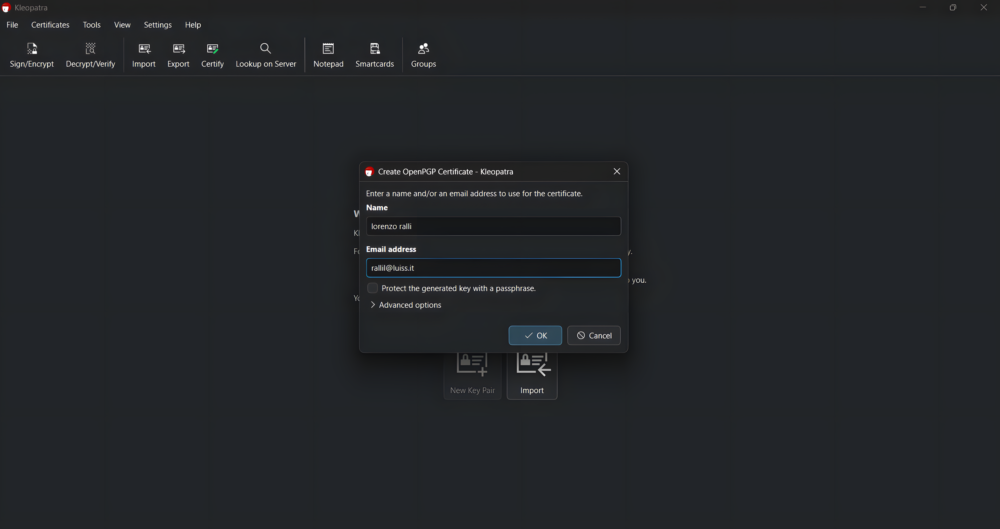</p> </div> --- ## gpg4win: creating a new key pair <div class="content-center"> Success screen: <img src="img/gpg4win/win3.png" style="height: 700px"> </div> --- ## gpg4win: signing a file <div class="content-center"> Click *Sign/Encrypt* in the action toolbar → choose your signing key: <img src="img/gpg4win/win4.png" style="height: 700px"> </div> --- ## gpg4win: signing a file <div class="content-center"> Success screen: <img src="img/gpg4win/win5.png" style="height: 700px"> </div> --- ## gpg4win: encrypting a file <div class="content-center"> Click *Sign/Encrypt* in the action toolbar → choose your encryption key: <img src="img/gpg4win/win6.png" style="height: 700px"> </div> --- ## gpg4win: encrypting a file <div class="content-center"> Success screen: <img src="img/gpg4win/win7.png" style="height: 700px"> </div> --- ## gpg4win: verifying a signature <div class="content-center"> Click *Decrypt/Verify* in the action toolbar → choose the signed file to verify in the *Open* window. <img src="img/gpg4win/win8.png" style="height: 700px"> </div> --- ## gpg4win: decrypting a file <div class="content-center"> Click *Decrypt/Verify* in the action toolbar → choose the encrypted file to decrypt in the *Open* window. <img src="img/gpg4win/win9.png" style="height: 700px"> </div> --- ## gpg4win: exporting public key <div class="content-center"> Select the key to export (by clicking on it) → click *Export* in the action toolbar → choose where to save it in the *Export* window: <br/> <p>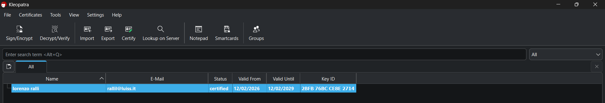</p> </div> --- ## gpg4win: importing public key <div class="content-center"> Click *Import* in the action toolbar → select the key file → certify it by verifying its fingerprint: <img src="img/gpg4win/win10.png" style="height: 700px"> </div> --- ## gpg4win: importing public key <div class="content-center"> Click *Import* in the action toolbar → select the key file → certify it by verifying its fingerprint: <img src="img/gpg4win/win11.png" style="height: 700px"> </div> --- ## gpg4win: importing public key <div class="content-center"> Success screen: <p>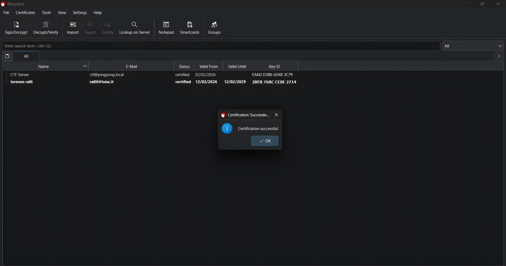</p> </div> --- ## gpg4win: encrypting a file with the imported public key <div class="content-center"> Click *Sign/Encrypt* in the action toolbar → select *Encrypt for others* → pick the imported key: <img src="img/gpg4win/win14.png" style="height: 700px"> </div> --- ## gpg4win: encrypting a file with the imported public key <div class="content-center"> Click *Sign/Encrypt* in the action toolbar → select *Encrypt for others* → pick the imported key: <img src="img/gpg4win/win15.png" style="height: 700px"> </div> --- ## gpg4win: encrypting a file with the imported public key <div class="content-center"> Click *Sign/Encrypt* in the action toolbar → select *Encrypt for others* → pick the imported key: <img src="img/gpg4win/win16.png" style="height: 700px"> </div> --- ## gpg4win: encrypting a file with the imported public key <div class="content-center"> Success screen: <img src="img/gpg4win/win17.png" style="height: 700px"> </div> --- <!-- .slide: data-state="break-blue hide-controls" --> # gpgtools <div class="content-center"> MacOS </div> --- ## gpgtools: interface overview <div class="content-center"> Initial page of gpgtools: <p>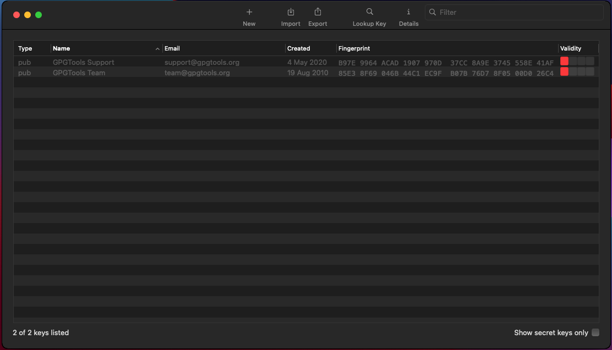</p> </div> --- ## gpgtools: action toolbar and context menu <div class="content-center"> The action toolbar offers quick access to: - Creating new key pair. - Import and export of keys. <br/> <br/> </div> --- ## gpgtools: action toolbar and context menu <div class="content-center"> The context menu offers quick access to: - Signing and Verification. - Encryption and Decryption. - Importing a public key from file. <br/> <p>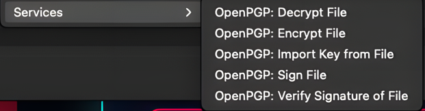</p> </div> --- ## gpgtools: creating a new key pair <div class="content-center"> Click *New* in the action toolbar → fill the form: <p>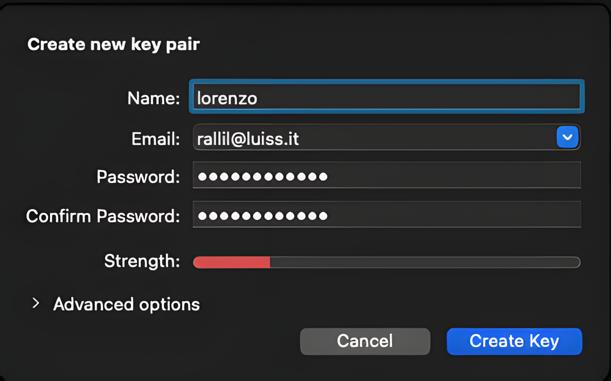</p> </div> --- ## gpgtools: creating a new key pair <div class="content-center"> Success screen: <p>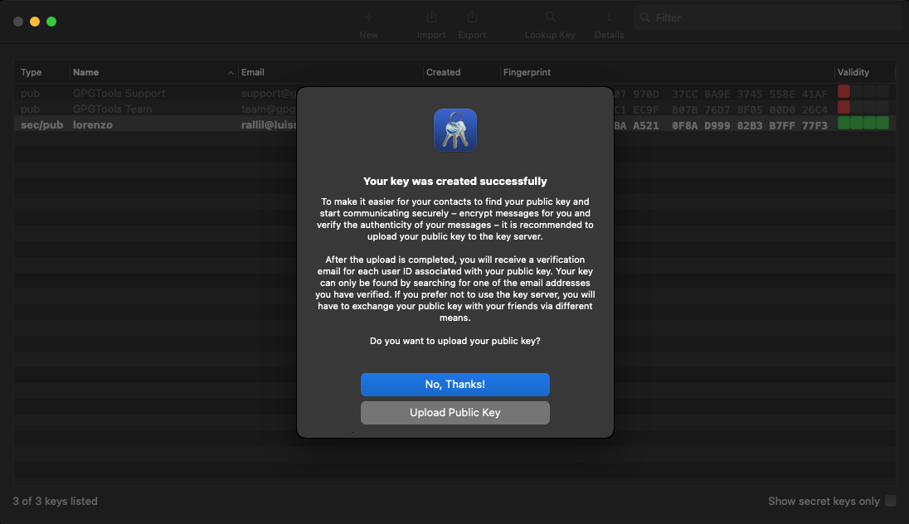</p> </div> --- ## gpgtools: signing a file <div class="content-center"> Right click the file to sign to spawn the context menu → click *Sign File* <img src="img/gpgtools/mac6.png" style="height: 700px"> </div> --- ## gpgtools: signing a file <div class="content-center"> Enter the passphrase chosen when creating the key pair to finalize the signing: <p>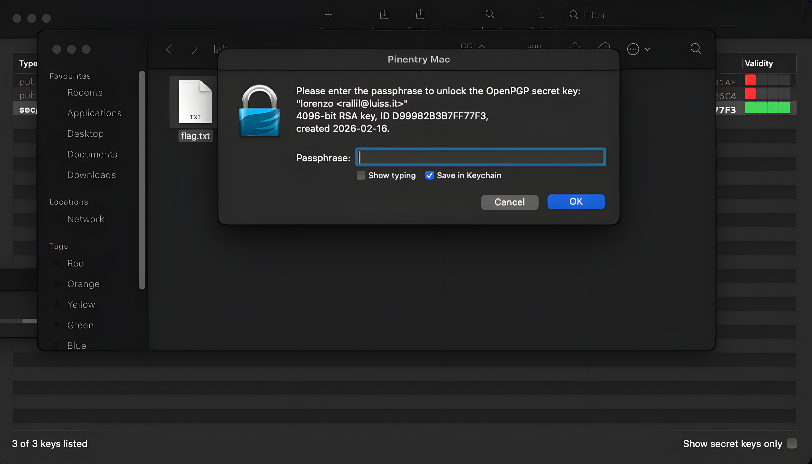</p> </div> --- ## gpgtools: signing a file <div class="content-center"> Success screen: <p>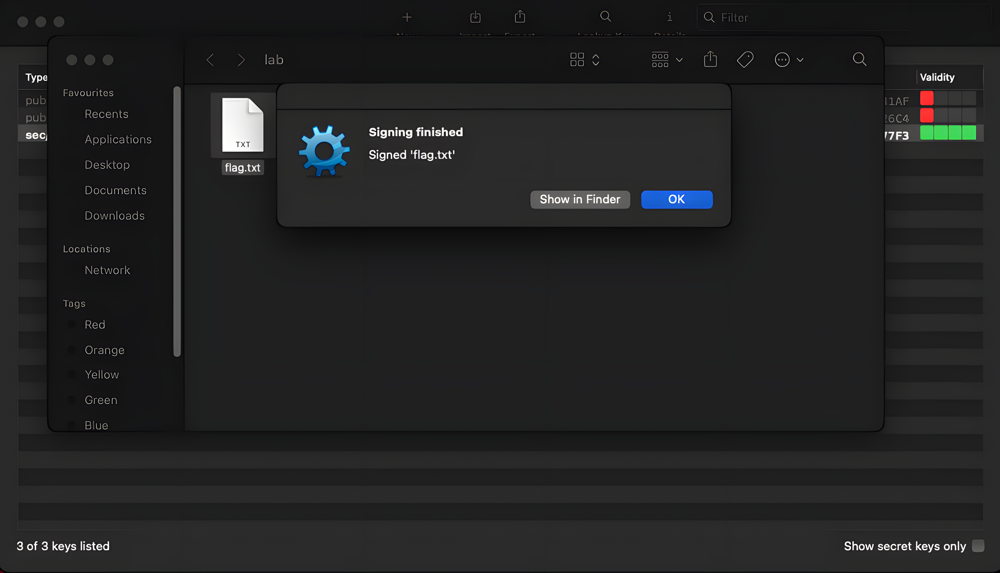</p> </div> --- ## gpgtools: encrypting a file <div class="content-center"> Right click the file to sign to spawn the context menu → click *Encrypt File*: <img src="img/gpgtools/mac6.png" style="height: 700px"> </div> --- ## gpgtools: encrypting a file <div class="content-center"> Select the key to use to encrypt the file: <p>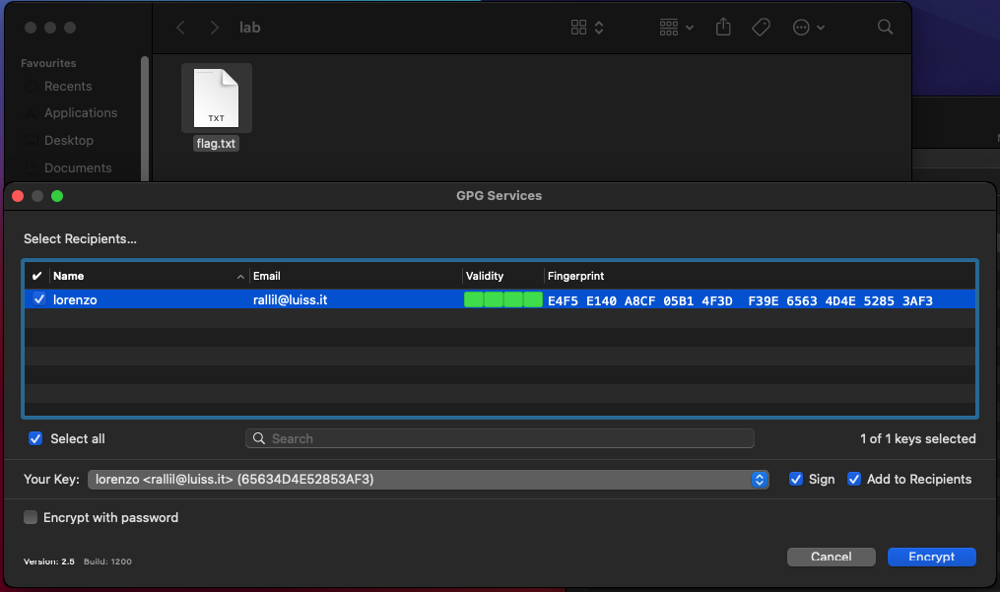</p> </div> --- ## gpgtools: encrypting a file <div class="content-center"> Enter the password chosen at key pair creation: <p>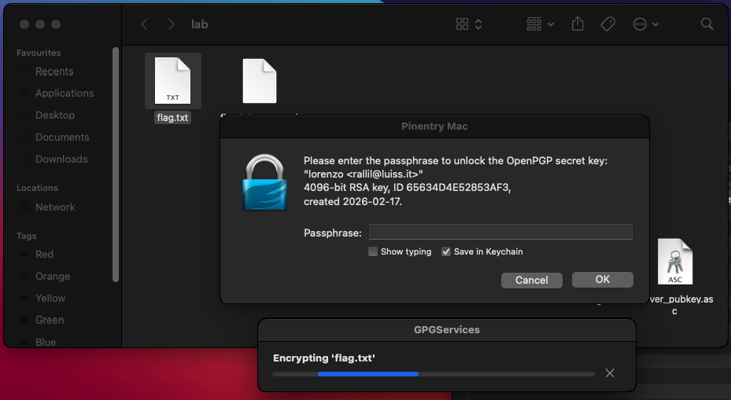</p> </div> --- ## gpgtools: encrypting a file <div class="content-center"> Success screen: <p>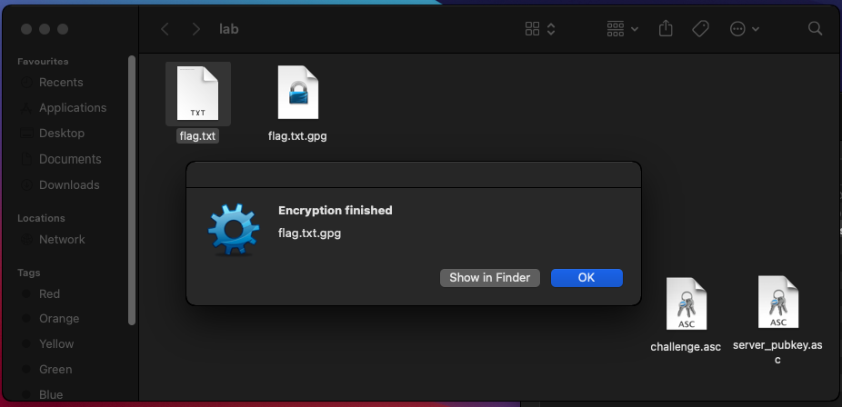</p> </div> --- ## gpgtools: verifying a signature <div class="content-center"> Right click the file to verify to spawn the context menu → click *Verify Signature of file*: <p>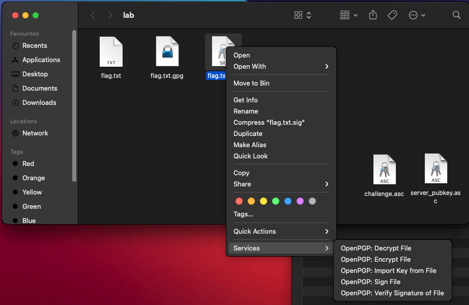</p> </div> --- ## gpgtools: verifying a signature <div class="content-center"> Success screen: <p>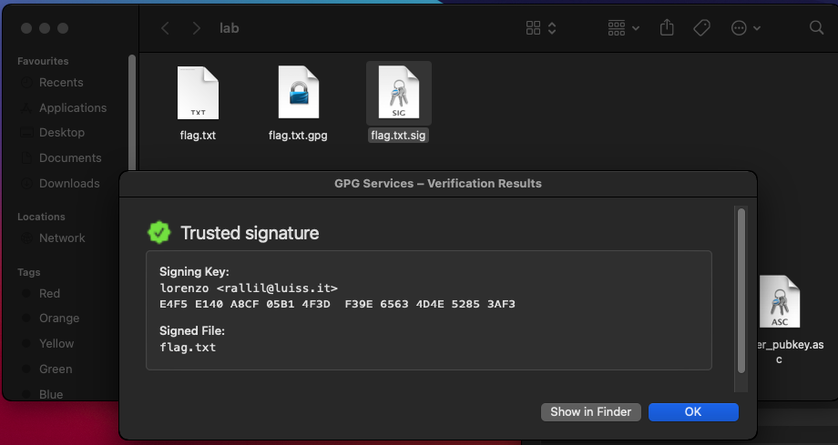</p> </div> --- ## gpgtools: decrypting a file <div class="content-center"> Right click the file to decrypt to spawn the context menu → click *Decrypt File*. <p>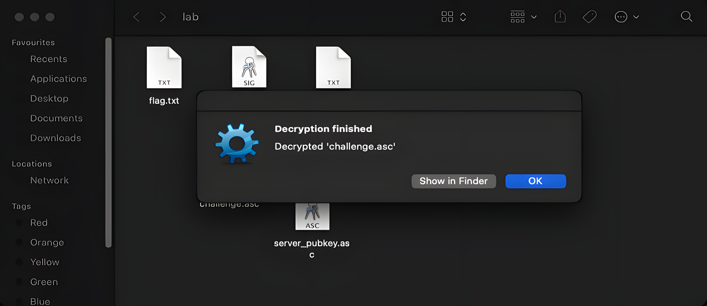</p> </div> --- ## gpgtools: exporting a public key <div class="content-center"> Click *Export* in the action toolbar → choose which key to export and where to: <p>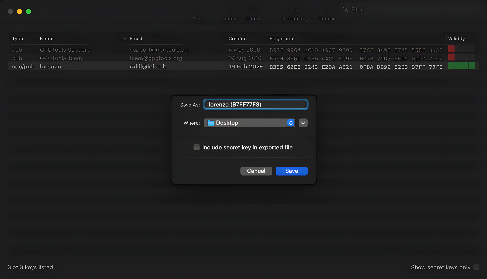</p> </div> --- ## gpgtools: exporting a public key <div class="content-center"> Success screen: <p>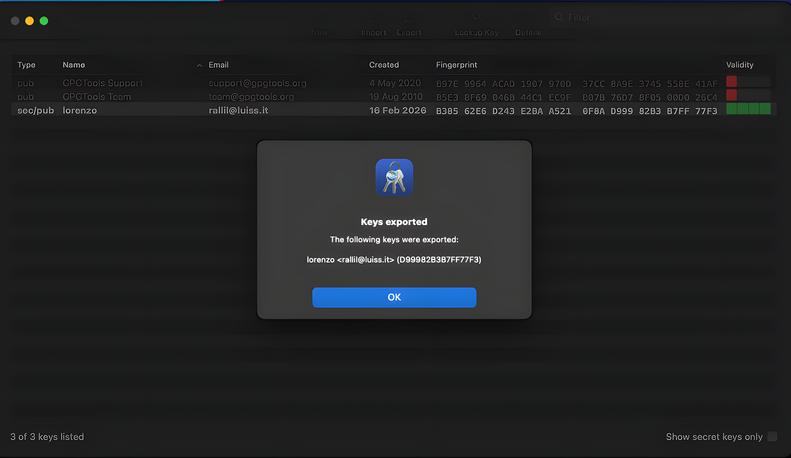</p> </div> --- ## gpgtools: importing a public key <div class="content-center"> Click *Import key from file* in the action toolbar → choose which key to import from the pop up menu: <p>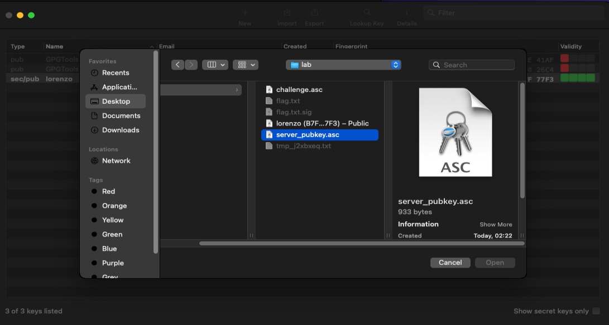</p> </div> --- ## gpgtools: importing a public key <div class="content-center"> Success screen: <p>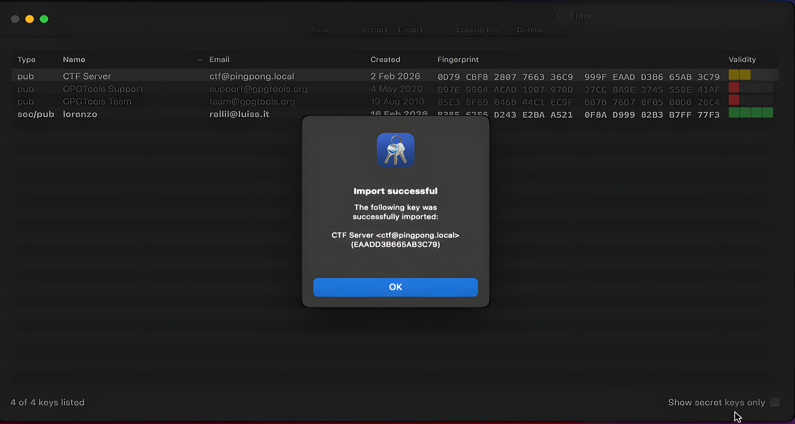</p> </div> --- ## gpgtools: encrypting a file with the imported public key <div class="content-center"> Right click the file to sign to spawn the context menu → click *Encrypt File* → pick the imported key: <p>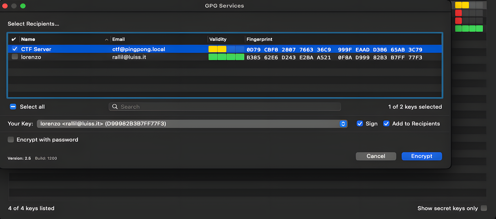</p> </div> --- ## Time to Cook <div class="content-center"> </div> --- <!-- .slide: data-state="break-blue hide-controls" --> # SharedFortune <div class="content-center"> Crypto Challenge 10 </div> --- ## SharedFortune - Reconnaissance <div class="content-center"> <p>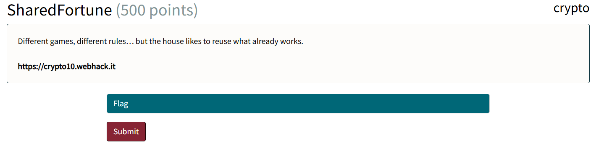</p> <br/> What can we observe? The challenge... - provides a casino-themed web interface with sections for *Slots*, *Shop*, *Systems*, and *Settings*; - includes a *Download All Public Keys* button in the *Systems* section; - requires a secret to unlock *Settings*, and coins to buy the flag in the *Shop*. </div> --- ## SharedFortune - Hypothesis <div class="content-center"> <div class="alert alert-hint">The name of the challenge hints at RSA moduli <b>sharing</b> prime factors.</div> <br/> <p>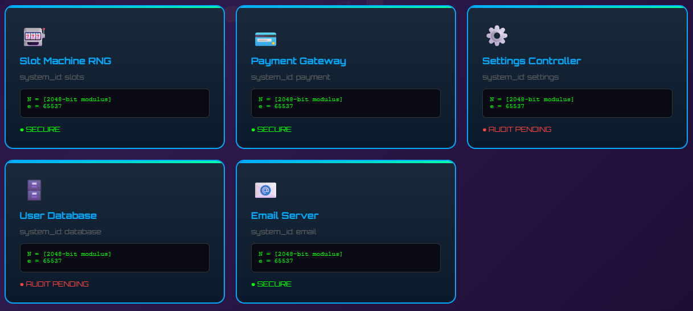</p> <br/> <div class="alert alert-hint">Two of the systems leveraged by the casino are yet to be audited...</div> </div> --- <!-- .slide: data-state="break-blue hide-controls" --> # CryptoBattle <div class="content-center"> Crypto Challenge 12 </div> --- ## CryptoBattle - Reconnaissance <div class="content-center"> <p>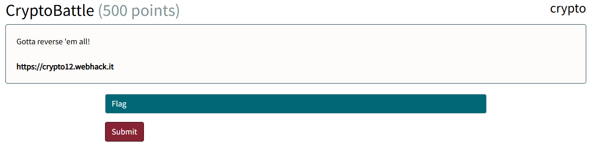</p> <br/> What can we observe? The challenge... - displays RSA parameters (`n`, `e`, `c`) on a chalkboard; - uses a turn-based battle system with player and professor HP; - provides a cheat console that accepts a password. </div> --- ## CryptoBattle - Hypothesis <div class="content-center"> <div class="alert alert-hint">There are RSA parameters and a ciphertext displayed on the chalkboard within the battle screen.</div> <br/> <p>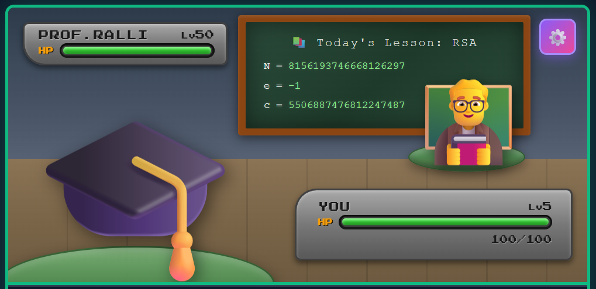</p> <br/> <div class="alert alert-warning">The public exponent <i>e</i> is <b>suspiciously negative</b>...</div> </div> --- <!-- .slide: data-state="break-blue hide-controls" --> # SlidingIntoDHs <div class="content-center"> Crypto Challenge 13 </div> --- ## SlidingIntoDHs - Reconnaissance <div class="content-center"> <p>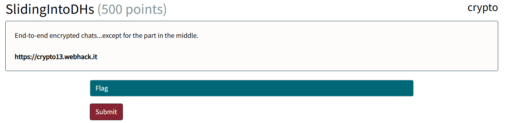</p> <br/> What can we observe? The challenge... - implements a Diffie-Hellman powered chat between two professors; - allows us to act as a Man-in-the-Middle during the key exchange; - reveals all public parameters, and provides the intercepted encrypted message. </div> --- <!-- .slide: data-state="break-blue hide-controls" --> # GPGPingPong <div class="content-center"> Crypto Challenge 14 </div> --- ## GPGPingPong - Reconnaissance <div class="content-center"> <p>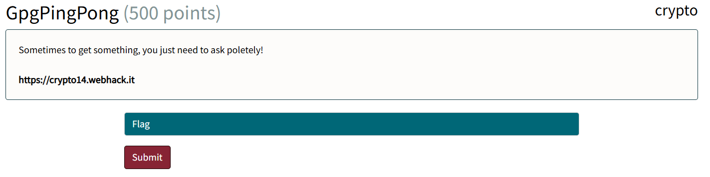</p> <br/> What can we observe? The challenge... - displays a server-generated message that we must sign; - requires uploading both a signature file and a public key file; </div>